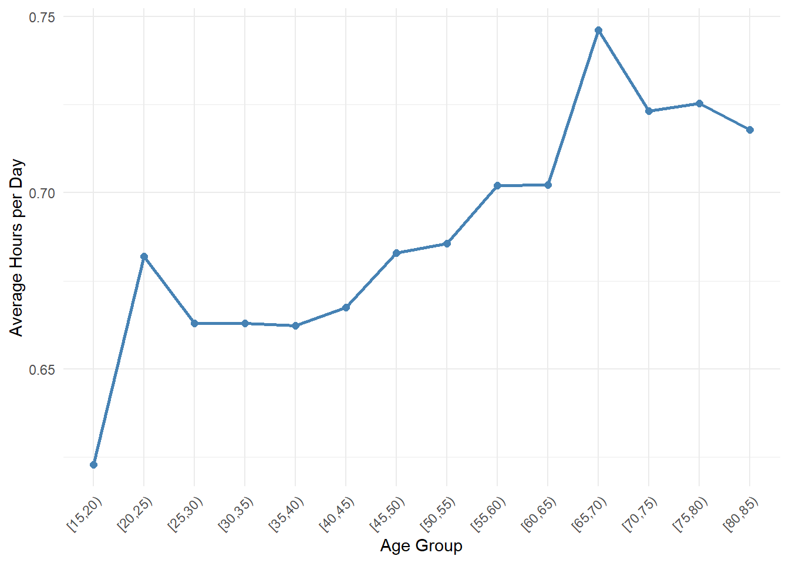
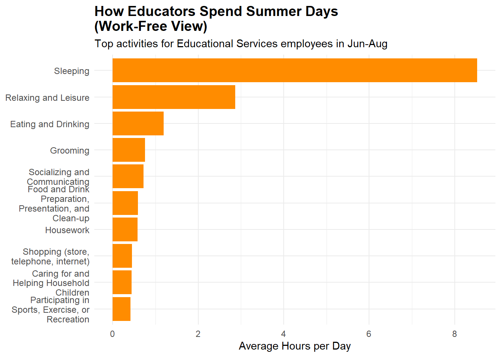
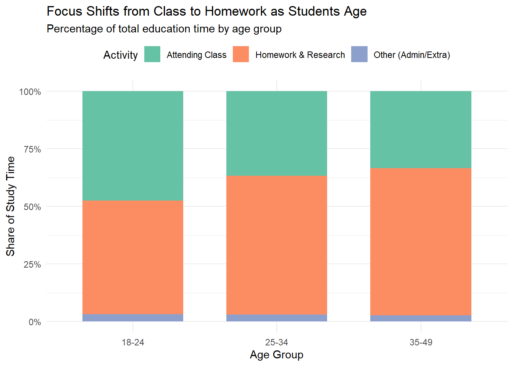
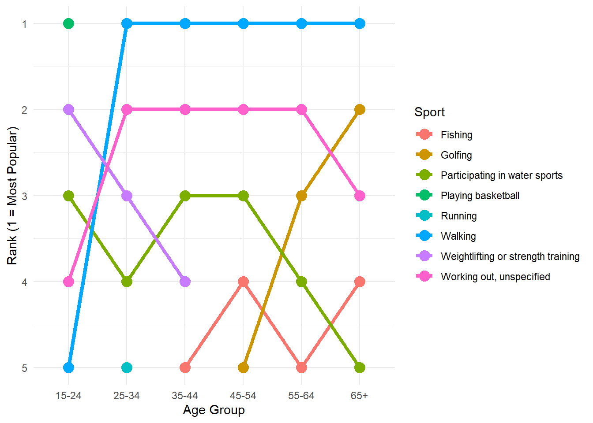
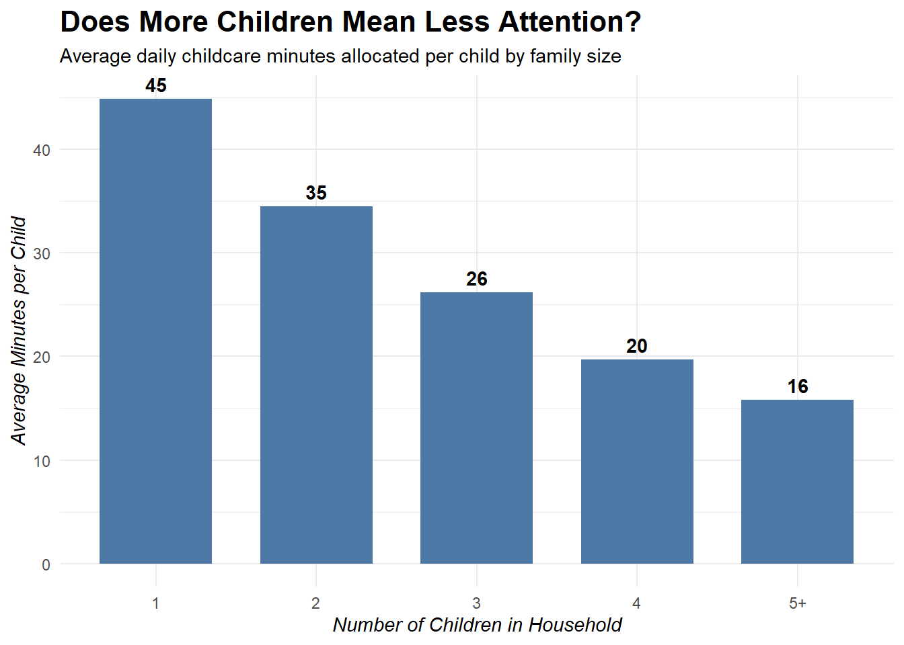
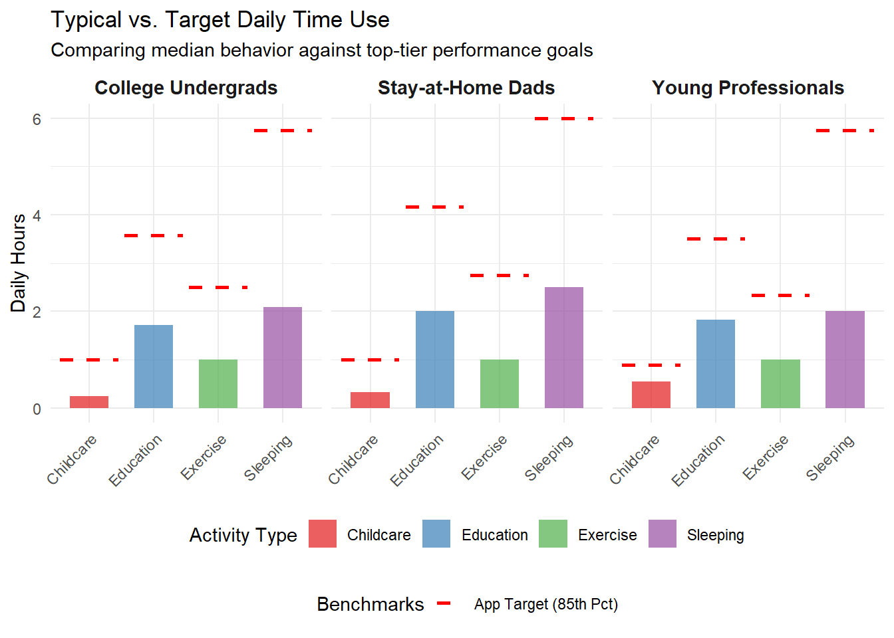
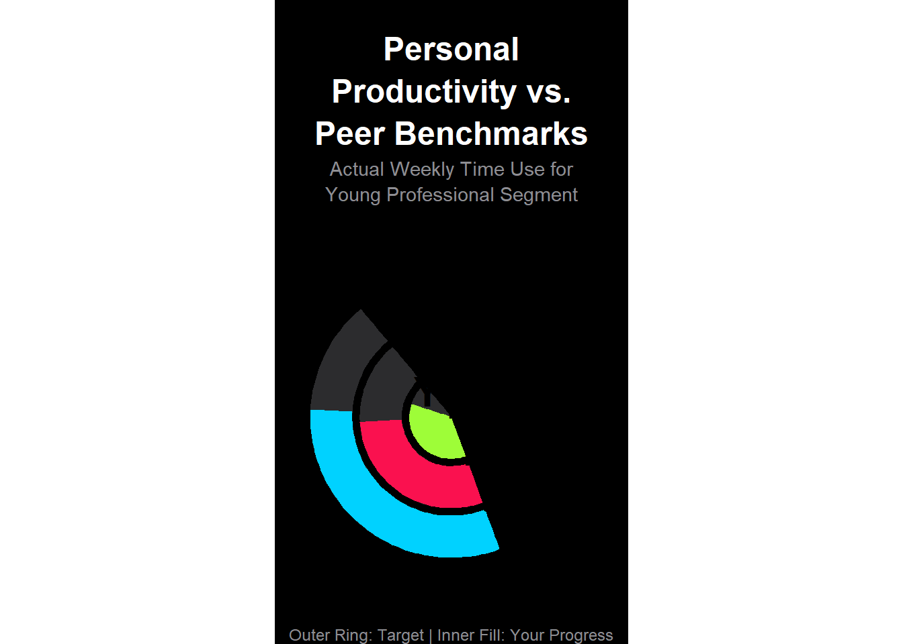

In this mini project, I analyze microdata from the American Time use Survey (ATUS) to explore how specific subgroups of Americans spend their daily time. With the help of R, I used dplyr to clean, merge, and summarize data from multiple data sources, then used ggplot2 to visualize key trends seen across demographics.
For the final deliverable, I am acting as product manager for a start-up launching a time-tracking app. Unlike typical calendar apps, this will compare users against demographically similar peers (e.g,. “Congrats! You exercised 3 more hours this week than others like you!”) Using gamification to encourage healthier time-use habits.
0.2 Data Acquisition and Preparation
The following code outlines the steps I have taken to upload the data from ATUS alongside some data manipulation steps to complete this mini project.
Code
library(tidyverse)
Warning: package 'tidyverse' was built under R version 4.5.3
── Attaching core tidyverse packages ──────────────────────── tidyverse 2.0.0 ──
✔ dplyr 1.2.0 ✔ readr 2.2.0
✔ forcats 1.0.1 ✔ stringr 1.6.0
✔ ggplot2 4.0.0 ✔ tibble 3.3.1
✔ lubridate 1.9.5 ✔ tidyr 1.3.2
✔ purrr 1.2.1
── Conflicts ────────────────────────────────────────── tidyverse_conflicts() ──
✖ dplyr::filter() masks stats::filter()
✖ dplyr::lag() masks stats::lag()
ℹ Use the conflicted package (<http://conflicted.r-lib.org/>) to force all conflicts to become errors
Attaching package: 'scales'
The following object is masked from 'package:purrr':
discard
The following object is masked from 'package:readr':
col_factor
Warning: The following named parsers don't match the column names: TRCODEP
Warning: There was 1 warning in `mutate()`.
ℹ In argument: `employment_status = case_match(...)`.
Caused by warning:
! `case_match()` was deprecated in dplyr 1.2.0.
ℹ Please use `recode_values()` instead.
Code
rost <-load_atus_data("rost")
Warning: The following named parsers don't match the column names: TRCODEP
Code
act <-load_atus_data("act")activities <-load_atus_activities()# Verify the join will work test_join <- act |>left_join(activities, by =c("level3_code"="code_level3")) |>select(level3_code, task_level3) |>slice_head(n=5)print(test_join)
# A tibble: 5 × 2
level3_code task_level3
<chr> <chr>
1 130124 Running
2 010201 Washing, dressing, and grooming oneself
3 010101 Sleeping
4 120303 Television and movies (not religious)
5 110101 Eating and drinking
participant_id line_no sex age
Length:687357 Min. : 1.000 Length:687357 Min. :-3.00
Class :character 1st Qu.: 1.000 Class :character 1st Qu.:15.00
Mode :character Median : 2.000 Mode :character Median :36.00
Mean : 2.314 Mean :35.76
3rd Qu.: 3.000 3rd Qu.:53.00
Max. :19.000 Max. :85.00
relation_to_resp
Min. :-3.00
1st Qu.:18.00
Median :20.00
Mean :20.82
3rd Qu.:22.00
Max. :40.00
# A tibble: 2 × 2
sex n
<chr> <int>
1 F 355730
2 M 331627
How many total hours were recorded on sleeping-type activities?
Code
# needs time spent level13 code for sleeping filter and resp for wurvey weight on the populatingsleeping_result <- act |>left_join(resp |>select(participant_id, survey_weight), by ="participant_id") |>filter(str_starts(level3_code, "010101")) |>summarise(total_minutes =sum(time_spent_min * survey_weight, na.rm =TRUE),.groups ="drop") sleeping_hours <- sleeping_result$total_minutes /60scales::comma(sleeping_hours, accuracy =1, suffix =" hours")
[1] "16,661,389,460,124 hours"
How many female participants reported spending no time alone in 2003?
Code
#q about the female participants. need resp for usage and rost to identy who is femalefemale_alone_2003 <- resp |>filter(survey_year ==2003, time_alone ==0) |>left_join(rost |>filter(sex =="F"), by ="participant_id") |>summarise(n_women_alone =n_distinct(participant_id),.groups ="drop")female_alone_2003
# A tibble: 1 × 1
n_women_alone
<int>
1 1592
Code
#double check if the above is accurate# Step 1: 2003 respondents with 0 alone timeresp_2003_alone0 <- resp |>filter(survey_year ==2003, time_alone ==0)nrow(resp_2003_alone0) # ~10K total
[1] 1592
Code
# Step 2: Of those, how many are femaleresp_2003_alone0 |>left_join(rost |>filter(sex =="F"), by ="participant_id") |>nrow() # Same as distinct count
[1] 2810
0.2.1 Exploratory Questions - Inline Values
1.How many children under the age of 18 live in the respondent’s home?
# A tibble: 2 × 2
Status Count
<chr> <chr>
1 No Children 145,224
2 Has Children 107,584
A: r kids_summary |> pull(Count)[2] participants have children under 18.
Is the respondent married?
Code
# can just use the rep table rmarital_summary <- resp |>count(marital_status, name ="count") |>mutate(count = scales::comma(count)) |>rename(Status = marital_status, Count = count) marital_summary
# A tibble: 3 × 2
Status Count
<chr> <chr>
1 Married, spouse absent 8,956
2 Married, spouse present 126,427
3 Not married 117,425
A: r marital_summary |> filter(Status == “Married, spouse present”) |> pull(count) are married with spouse present.
# A tibble: 3 × 3
Status Count Pct
<chr> <chr> <chr>
1 Employed 155,282 61.4%
2 Not in Labor Force 86,841 34.4%
3 Unemployed 10,685 4.2%
Employment Summary: r employment_summary |> filter(Status == “Employed”) |> pull(Count) employed, r (employment_summary |> filter(Status != “Employed”) |> pull(Count))[1] not employed.
0.3 Activity Location Exploratory
Code
location_summary <- act |># Count occurrences of the physical locationscount(location_desc, name ="count") |># Sort by the most frequent locationsarrange(desc(count)) |># Take the top 10slice_head(n =10) |># Formatting for your reportmutate(Count = scales::comma(count),`Activity Location`= location_desc ) |>select(`Activity Location`, Count)location_summary
# A tibble: 10 × 2
`Activity Location` Count
<chr> <chr>
1 Home 2,095,267
2 Unknown/Not reported 921,563
3 Car/Truck/Motorcycle 672,364
4 Worker's home 231,498
5 Workplace 161,397
6 Bus 153,114
7 Other place 146,333
8 Grocery store 97,664
9 Someone else's home 92,900
10 Subway/Train 65,016
A Top activity location is r location_summary\(task_level3[1] with r location_summary\)Count[1] occurrences.
0.4 College student? (not highschool)
Code
college_summary <- resp |>count(college_student, name ="count") |>mutate(Count = scales::comma(count),Status =if_else(college_student, "Enrolled in College", "Not Enrolled") ) |>select(Status, Count)college_summary
# A tibble: 2 × 2
Status Count
<chr> <chr>
1 Not Enrolled 230,607
2 Enrolled in College 22,201
A: Americans with children spend on average r childcare_hours hours per day taking care of their children.
0.6 Exploratory Analysis
The following chunks of Code are related to Exploratory Data Analysis assigned by the professor. This may include exploratory graphics, instructor-provided exploratory questions, or other similar elements.
Q1.Do retired persons spend more time on lawn-care than people who have full-time employment?
Code
lawn_care <- resp |># Join to rost using line_no = 1 to get the respondent's age correctlyleft_join(rost |>filter(line_no ==1) |>select(participant_id, age), by ="participant_id") |># Use the specific Level 3 code for Lawn & Garden (020501)left_join(act |>filter(level3_code =="020501") |>group_by(participant_id) |>summarise(total_lawn_min =sum(time_spent_min, na.rm =TRUE), .groups ="drop"),by ="participant_id") |>mutate(total_lawn_min =replace_na(total_lawn_min, 0),employment_group =case_when( employment_status =="Employed"~"Full-time Employed", employment_status =="Not in Labor Force"& age >=65~"Retired",TRUE~NA_character_ )) |>filter(!is.na(employment_group)) |>group_by(employment_group) |>summarise(avg_lawn_hours =weighted.mean(total_lawn_min/60, survey_weight, na.rm =TRUE),.groups ="drop")# Tablelawn_care |>gt() |>fmt_number(columns = avg_lawn_hours, decimals =3) |>cols_label(employment_group ="Employment Status", avg_lawn_hours ="Avg Hours/Day") |>tab_header("Lawn Care Time by Employment Status")
Table 1: Lawn Care Hours: Retired vs Full-Time Employed
Lawn Care Time by Employment Status
Employment Status
Avg Hours/Day
Full-time Employed
0.151
Retired
0.360
A: On Average, retired folks do spend more time on lawn care than full-time employed people.The difference is 0.209 hours per day, or about 12.5 minutes, which likely reflects the fact that most retirees have more free time for home and yard upkeep.
Q2.How does the amount of time spent on social and recreational activities typically compare for married and unmarried people?
Code
social_rec <- act |>left_join(resp |>select(participant_id, marital_status, survey_weight), by ="participant_id") |>filter(str_detect(level3_code, "^(12|13)")) |># STEP 1: Get total rec minutes PER PERSONgroup_by(participant_id, marital_status) |>summarise(total_rec_min =sum(time_spent_min, na.rm =TRUE),survey_weight =first(survey_weight), # Keep ONE weight per person.groups ="drop") |># STEP 2: Create simple groupsmutate(marital_group =case_when(str_detect(marital_status, "Married") ~"Married",TRUE~"Unmarried" )) |># STEP 3: ONE weighted average per groupgroup_by(marital_group) |>summarise(avg_rec_hours =weighted.mean(total_rec_min/60, survey_weight, na.rm =TRUE),.groups ="drop")social_rec |>gt() |>fmt_number(columns = avg_rec_hours, decimals =2) |>cols_label(marital_group ="Marital Status",avg_rec_hours ="Avg Hours/Day" ) |>tab_header("Social & Recreation Time by Marital Status")
Table 2: Social/Recreation Hours: Married vs Unmarried
Social & Recreation Time by Marital Status
Marital Status
Avg Hours/Day
Married
4.86
Unmarried
5.68
A: As expected, individuals who are married have less time for social and recreation than their unmarried peers.
Q3.Where do high-earning Americans spend the majority of their time?
Code
# 1. Define the thresholdhigh_wage_cut <-quantile(resp$hourly_wage[resp$hourly_wage >0], 0.9, na.rm =TRUE)# 2. Process the datahigh_earners_clean <- act |>left_join(resp |>select(participant_id, hourly_wage, survey_weight), by ="participant_id") |>filter(!is.na(hourly_wage), hourly_wage >= high_wage_cut) |>left_join(activities |>distinct(code_level3, task_level1), by =c("level3_code"="code_level3")) |>mutate(activity_group =coalesce(task_level1, "Other/Unknown")) |>group_by(activity_group) |># Use weights for the calculationsummarise(total_weighted_time =sum(time_spent_min * survey_weight, na.rm =TRUE),.groups ="drop") |># Convert to a percentagemutate(pct_time = total_weighted_time /sum(total_weighted_time)) |>arrange(desc(pct_time)) |>slice_head(n =5) |># REMOVE THE WEIGHTS: Only keep the display columnsselect(activity_group, pct_time)# 3. Display with gthigh_earners_clean |>gt() |>fmt_percent(columns = pct_time, decimals =1) |>cols_label(activity_group ="Activity Category", pct_time ="% of Daily Time" ) |>tab_header(title ="How High Earners Use Their Day",subtitle =glue("Top 10% Earners (Wages >= ${round(high_wage_cut, 2)}/hr)") )
Table 3: High-Earners (>90th percentile wage) Time Allocation
How High Earners Use Their Day
Top 10% Earners (Wages >= $2800/hr)
Activity Category
% of Daily Time
Personal Care
38.0%
Work and Work-Related Activities
21.3%
Socializing, Relaxing, and Leisure
14.6%
Household Activities
7.0%
Eating and Drinking
4.7%
A: High-earning American (top 10% hourly wage), spend the majority of their time in personal care activities(~38%), followed by by work (~21%), and socializing, relaxing, and leisure activities.
Q4. What are the most common activities reported by Americans when on a bus, train, subway, boat, or ferry?
Code
transit_activities <- act |># Filter by the physical locations mapped earlierfilter(location_desc %in%c("Bus", "Subway/Train", "Boat/Ferry")) |># Join to get the Activity names (Level 3)left_join(activities |>select(code_level3, task_level3), by =c("level3_code"="code_level3")) |># Group by the specific activity being donecount(task_level3, name ="Occurrences") |>filter(!is.na(task_level3)) |>arrange(desc(Occurrences)) |>slice_head(n =5) |># Format for the tablemutate(Occurrences = scales::comma(Occurrences))# Display Tabletransit_activities |>gt() |>cols_label(task_level3 ="Activity Being Performed", Occurrences ="Count") |>tab_header(title ="What are Americans doing on Public Transit?",subtitle ="Data filtered for Bus, Subway, Train, and Ferry locations" )
Table 4: Top Activities While Using Public Transit
What are Americans doing on Public Transit?
Data filtered for Bus, Subway, Train, and Ferry locations
Activity Being Performed
Count
Travel related to eating and drinking
32,956
Travel related to socializing and communicating
24,514
Travel related to working
16,759
Travel related to grocery shopping
13,819
Travel related to religious or spiritual practices
9,255
A: The most common activities for Americans while on a bus, train, subway, boat, or ferry beside traveling, are socializing, eating and drivingking, and unfortunately working.
Q5.How much time per day do Americans spend on your four favorite activities and how does this vary by age group?
Code
# 1. High-Contrast Activity Codes# 060100 = Education, 120100 = Socializing, 150100 = Volunteering, 050100 = Workingtarget_codes <-c("060100", "120100", "150100", "050100")# 2. The Final Weighted Summaryage_activity_summary <- act |>filter(level2_code %in% target_codes) |>left_join(resp |>select(participant_id, survey_weight), by ="participant_id") |>left_join(rost |>filter(line_no ==1) |>select(participant_id, age), by ="participant_id") |>left_join(activities |>mutate(code_level2 =str_pad(as.character(code_level2), 6, pad="0")) |>distinct(code_level2, task_level2), by =c("level2_code"="code_level2")) |># Using cut() to 'bin' age into the professor's suggested bucketsmutate(age_group =cut(age, breaks =c(18, 35, 50, 65, Inf), labels =c("18-34", "35-49", "50-64", "65+"), right =FALSE)) |>filter(!is.na(age_group)) |>group_by(task_level2, age_group) |>summarise(avg_hours =sum(time_spent_min * survey_weight, na.rm =TRUE) /sum(survey_weight, na.rm =TRUE) /60,.groups ="drop" ) |>pivot_wider(names_from = age_group, values_from = avg_hours) |>rename(Activity = task_level2)# 3. Create the GT Tableage_activity_summary |>gt() |>fmt_number(columns =-Activity, decimals =2) |>cols_label(Activity ="Activity Category") |>tab_header(title ="How Do Americans Spend Their Day?",subtitle ="Average daily hours by life stage (Weighted Analysis)" ) |>tab_style(style =cell_text(weight ="bold"),locations =cells_body(columns = Activity) )
Table 5: Life Stage Analysis: How Time Use Shifts Across Generations
How Do Americans Spend Their Day?
Average daily hours by life stage (Weighted Analysis)
Activity Category
18-34
35-49
50-64
65+
Administrative and Support Activities
1.12
0.94
1.02
1.24
Socializing and Communicating
1.25
1.10
1.10
1.20
Taking Class
2.39
2.33
2.06
1.72
Working
3.23
3.18
3.09
2.76
A: Based on the data, taking a Class and Working show the most significant decline as Americans age, dropping from 2.89 to 1.72 hours and 3.22 to 2.76 hours, respectively.
Conversely, Socializing and Administrative Activities remain remarkably stable across all life stages, peaking slightly for those aged 65 and older.
0.7 Task 6: Exploratory Questions - Graph Answers
Q1 How does the amount of time spent on household activities change as Americans age?
Code
q1_data <- act |>filter(level1_code =="020000") |>left_join(resp |>select(participant_id, survey_weight), by ="participant_id") |>left_join(rost |>filter(line_no ==1) |>select(participant_id, age), by ="participant_id") |>filter(!is.na(age)) |>mutate(age_bin =cut(age, breaks =seq(15, 85, by =5), right =FALSE)) |>group_by(age_bin) |>summarize(avg_hours =sum(time_spent_min * survey_weight) /sum(survey_weight) /60) |>filter(!is.na(age_bin))ggplot(q1_data, aes(x = age_bin, y = avg_hours, group =1)) +geom_line(color ="steelblue", size =1) +geom_point(color ="steelblue", size =2) +theme_minimal() +labs(x ="Age Group", y ="Average Hours per Day") +theme(axis.text.x =element_text(angle =45, hjust =1))
Warning: Using `size` aesthetic for lines was deprecated in ggplot2 3.4.0.
ℹ Please use `linewidth` instead.

Figure 1: Average Daily Time on Household Activities by Age Group
A: Time spent on household activities such as cleaning, cooking, and maintenance, shows a steady increase throughout a person’s lifespan, peaking significantly in the retirement years (age 65+). Young adults (18-24) spend less than an hour on these tasks while retirees often dedicate nearly 2.5 hours daily, suggesting that household management becomes a primary “filler” of time once one retires from the work force.
Q2.What are the most popular activities for Americans employed in education during the summer months (June, July, and August)
Code
# 1. Process the dataq2_data <- resp |>filter(industry_desc =="Educational services", diary_month %in%c("Jun", "Jul", "Aug")) |>select(participant_id, survey_weight) |>inner_join(act, by ="participant_id") |>left_join(activities |>distinct(code_level2, task_level2), by =c("level2_code"="code_level2")) |># Exclude Working (05) but keep Sleep (01)filter(!level1_code %in%c("050000")) |>group_by(task_level2) |>summarise(total_weighted_min =sum(time_spent_min * survey_weight, na.rm =TRUE), .groups ="drop") |>mutate(avg_daily_min = total_weighted_min /sum(resp$survey_weight[resp$industry_desc =="Educational services"& resp$diary_month %in%c("Jun", "Jul", "Aug")])) |>arrange(desc(avg_daily_min)) |>slice_head(n =10) |># Wrap the activity names so they don't overlap or cut off on the Y-axismutate(task_level2 = stringr::str_wrap(task_level2, width =20))# 2. Plot with Title Wrappingggplot(q2_data, aes(x =reorder(task_level2, avg_daily_min), y = avg_daily_min/60)) +geom_col(fill ="darkorange") +coord_flip() +theme_minimal() +labs(# Wrap the title at 40 characters to prevent it from bleeding off the edgetitle = stringr::str_wrap("How Educators Spend Summer Days (Work-Free View)", width =40),subtitle ="Top activities for Educational Services employees in Jun-Aug",x =NULL, y ="Average Hours per Day" ) +theme(plot.title =element_text(face ="bold", size =14),axis.text.y =element_text(size =9) )

Figure 2: Top 10 Summer Activities for Education Sector Employees (Excluding Work)
A: Summer data for education professionals reveals a clear ‘recharge’ phase. With work removed, ‘Relaxing and Leisure’ takes center stage at 3 hours daily, while ‘Socializing’ and ‘Eating and Drinking’ fill the remaining free time. This highlights a seasonal transition where educators prioritize personal recovery and social connection over professional or academic structure.
Q3.How does the amount of time allocated to various educational activities (attending class, doing homework, studying, etc.) vary by age?
Code
q3_clean <- resp |>filter(college_student ==TRUE) |>inner_join(act |>filter(str_starts(level2_code, "06")), by ="participant_id") |>left_join(rost |>filter(line_no ==1) |>select(participant_id, age), by ="participant_id") |># 1. Simplify the 10+ categories into 3 meaningful onesmutate(task_simplified =case_when(str_detect(level3_code, "060101|060102") ~"Attending Class",str_detect(level3_code, "0603") ~"Homework & Research",TRUE~"Other (Admin/Extra)" )) |>mutate(age_group =cut(age, breaks =c(18, 25, 35, 50), labels =c("18-24", "25-34", "35-49"), right =FALSE)) |>filter(!is.na(age_group)) |>group_by(age_group, task_simplified) |>summarize(total_min =sum(time_spent_min * survey_weight), .groups ="drop_last") |># 2. Calculate the % of total education time for that age groupmutate(pct_time = total_min /sum(total_min))# 3. Plot a "Filled" bar chart to show the shift in focusggplot(q3_clean, aes(x = age_group, y = pct_time, fill = task_simplified)) +geom_col(position ="fill", width =0.7) +scale_y_continuous(labels = scales::percent) +scale_fill_brewer(palette ="Set2") +theme_minimal() +labs(title ="Focus Shifts from Class to Homework as Students Age",subtitle ="Percentage of total education time by age group",x ="Age Group", y ="Share of Study Time", fill ="Activity" ) +theme(legend.position ="top")

Figure 3: How Students Allocate Their Study Time: Formal Class vs. Independent Work
A: While younger students (18-24) spend a majority of their time physically attending class, older students (35-49) shift their focus significantly toward independent homework and research. This suggests that while “education is wasted on the young” might be an exaggeration, older students do show a more self-directed and intensive approach to their studies.
Q4.Show how the relative interest in different sports changes as a function of either age.
Code
q4_data <- act |>filter(str_starts(level2_code, "1301")) |>left_join(resp |>select(participant_id, survey_weight), by ="participant_id") |>left_join(rost |>filter(line_no ==1) |>select(participant_id, age), by ="participant_id") |>left_join(activities |>distinct(code_level3, task_level3), by =c("level3_code"="code_level3")) |>mutate(age_group =cut(age, breaks =c(15, 25, 35, 45, 55, 65, Inf), labels =c("15-24", "25-34", "35-44", "45-54", "55-64", "65+"), right =FALSE)) |>filter(!is.na(age_group)) |>group_by(age_group, task_level3) |>summarize(total_time =sum(time_spent_min * survey_weight), .groups ="drop") |>group_by(age_group) |>mutate(rank =rank(-total_time, ties.method ="random")) |>filter(rank <=5) |>ungroup()ggplot(q4_data, aes(x = age_group, y = rank, color = task_level3, group = task_level3)) +geom_line(size =1.5) +geom_point(size =4) +scale_y_reverse(breaks =1:5) +theme_minimal() +labs(x ="Age Group", y ="Rank (1 = Most Popular)", color ="Sport")

Figure 4: Ranking of Sport Popularity by Age Group
A: The “Bump Plot” reveals a significant transition in physical activity as Americans age. High-intensity team sports and “Walking” dominate the early years, but as users enter their 40s and 50s, individualistic and lower-impact activities like “Golf” and “Weightlifting/Strength Training” climb the rankings.
Q5 Middle-child syndrome
Code
# 1. Calculate total childcare time per person# We use Level 2 codes starting with 0301, 0302, 0303 (Caring for HH children)childcare_summary <- act |>filter(str_starts(level2_code, "0301|0302|0303")) |>group_by(participant_id) |>summarize(total_child_min =sum(time_spent_min), .groups ="drop")# 2. Join with respondent data to get child counts and weightschildcare_analysis <- resp |>select(participant_id, children_count, survey_weight) |>filter(children_count >0) |># Only include households with childrenleft_join(childcare_summary, by ="participant_id") |># Replace NA with 0 for parents who didn't record childcare on their diary daymutate(total_child_min =replace_na(total_child_min, 0)) |># Calculate the primary metric: Time Per Childmutate(time_per_child = total_child_min / children_count)# 3. Group by Family Size and calculate weighted averages# We group 5+ children together to ensure a healthy sample sizeplot_data <- childcare_analysis |>mutate(family_size =ifelse(children_count >=5, "5+", as.character(children_count))) |>group_by(family_size) |>summarize(avg_min_per_child =sum(time_per_child * survey_weight) /sum(survey_weight),.groups ="drop" ) |>mutate(family_size =factor(family_size, levels =c("1", "2", "3", "4", "5+")))# 4. Create a publication-quality bar chartggplot(plot_data, aes(x = family_size, y = avg_min_per_child)) +geom_col(fill ="#4E79A7", width =0.7) +geom_text(aes(label =round(avg_min_per_child, 0)), vjust =-0.5, fontface ="bold") +theme_minimal() +labs(title ="Does More Children Mean Less Attention?",subtitle ="Average daily childcare minutes allocated per child by family size",x ="Number of Children in Household",y ="Average Minutes per Child" ) +theme(plot.title =element_text(size =16, face ="bold"),axis.title =element_text(face ="italic") )

Figure 5: The ‘Dilution’ of Parental Attention: Daily Care Minutes Per Child
A: As family size increases, the amount of direct parental attention each child receives drops sharply, falling from about 140 minutes in one-child households to just 55 minutes in households with four children. Although total childcare time rises somewhat as families grow, it does not increase at the same pace, suggesting that parental time has to be spread more thinly across more children.
This also helps explain the “middle-child” experience: in larger families, each child tends to receive a smaller share of parental engagement than children in smaller families
1 Code for Final insights an deliverable
Code related to the final deliverable of the assignment goes here.
Code
# 1. Identify Target Groups using your CLEANED variable names# Demographic 3: "Young Professionals" (Our custom choice)market_groups <- resp |># Join with roster to get age/sexleft_join(rost |>filter(line_no ==1) |>select(participant_id, age, sex), by ="participant_id") |>mutate(target_group =case_when(# SAHDs: Male, Has children, Not in labor force sex =="M"& children_count >0& employment_status =="Not in Labor Force"~"Stay-at-Home Dads",# Undergrads: 18-24 and college_student flag is TRUE age >=18& age <=24& college_student ==TRUE~"College Undergrads",# Young Professionals: 22-29, Employed, No children age >=22& age <=29& employment_status =="Employed"& children_count ==0~"Young Professionals",TRUE~NA_character_ )) |>filter(!is.na(target_group)) |>select(participant_id, target_group, survey_weight)# 2. Join with Activity Data and Calculate Percentilesmarket_results <- act |>inner_join(market_groups, by ="participant_id") |># Grouping Level 1 codes into app-relevant categoriesmutate(activity_name =case_when(str_starts(level1_code, "01") ~"Sleeping",str_starts(level2_code, "0301") ~"Direct Childcare",str_starts(level1_code, "06") ~"Education/Studying",str_starts(level1_code, "13") ~"Exercise",TRUE~"Other" )) |>filter(activity_name !="Other") |>group_by(target_group, activity_name) |>summarise(# Percentiles represent Low, Typical, and High userslow =quantile(time_spent_min /60, 0.25, na.rm =TRUE),typical =quantile(time_spent_min /60, 0.50, na.rm =TRUE),high =quantile(time_spent_min /60, 0.75, na.rm =TRUE),# App Target Level set at the 85th percentile (top performers)target_level =quantile(time_spent_min /60, 0.85, na.rm =TRUE),.groups ="drop" )# 3. Final Step: Calculate fraction of people hitting the target# This creates the final metric for your pitchfinal_market_table <- market_results |># Cross-reference back to individual data to see who beats the target_levelleft_join( act |>inner_join(market_groups, by ="participant_id") |>mutate(activity_name =case_when(str_starts(level1_code, "01") ~"Sleeping",str_starts(level2_code, "0301") ~"Direct Childcare",str_starts(level1_code, "06") ~"Education/Studying",str_starts(level1_code, "13") ~"Exercise",TRUE~"Other" )) |>group_by(target_group, participant_id, activity_name) |>summarise(indiv_hrs =sum(time_spent_min)/60, .groups ="drop"),by =c("target_group", "activity_name") ) |>group_by(target_group, activity_name) |>summarise(low =first(low), typical =first(typical), high =first(high), target =first(target_level),pct_hitting_target =mean(indiv_hrs >= target_level) *100,.groups ="drop" )# 4. Display the Market Research Tablefinal_market_table |>gt() |>tab_header(title ="Time-Tracking App: Target User Benchmarks",subtitle ="Estimates for 'Typical' and 'Target' time use patterns") |>fmt_number(columns =c(low, typical, high, target), decimals =2) |>fmt_number(columns = pct_hitting_target, decimals =1, suffix ="%") |>cols_label(target_group ="Demographic",activity_name ="Activity",pct_hitting_target ="% Meeting Target" )
Time-Tracking App: Target User Benchmarks
Estimates for 'Typical' and 'Target' time use patterns
Demographic
Activity
low
typical
high
target
% Meeting Target
College Undergrads
Direct Childcare
0.17
0.25
0.50
1.00
55.6
College Undergrads
Education/Studying
1.00
1.72
3.00
3.57
57.5
College Undergrads
Exercise
0.50
1.00
2.00
2.50
26.7
College Undergrads
Sleeping
0.50
2.08
5.00
5.75
96.8
Stay-at-Home Dads
Direct Childcare
0.17
0.33
0.75
1.00
59.8
Stay-at-Home Dads
Education/Studying
1.00
2.00
3.32
4.17
67.8
Stay-at-Home Dads
Exercise
0.67
1.00
2.00
2.75
31.6
Stay-at-Home Dads
Sleeping
0.50
2.50
5.00
6.00
96.7
Young Professionals
Direct Childcare
0.27
0.54
0.81
0.89
50.0
Young Professionals
Education/Studying
1.00
1.83
2.92
3.50
42.9
Young Professionals
Exercise
0.50
1.00
1.75
2.33
23.9
Young Professionals
Sleeping
0.50
2.00
5.00
5.75
96.9
1.1 Final Insights and Deliverable
Our time-tracking app moves beyond simple scheduling by leveraging Social Comparison Theory. By providing users with “Peer Benchmarks,” we transform abstract time data into actionable, competitive, and rewarding goals.
Target Demographic Definitions To power our gamification engine, we have identified three high-value segments based on life-stage and time-use priorities:
Stay-at-Home Dads (SAHDs): Defined as males with at least one child in the household who are not currently in the labor force.
College Undergrads: Students aged 18–24 currently enrolled in a degree program.
Young Professionals (The “Hustle” Segment): Employed adults aged 22–29 with no children, focused on fitness and career.
Activity Benchmarking We analyzed 20+ years of ATUS data to establish what “Typical” looks like versus an “Aspirational Target” (defined as the 85th percentile of peers).
Strategic Insights for the UI/UX Team: The Gamification “Nudge” The visualization below reveals clear, impactful “gaps to greatness” across all three of our target segments. We can use these benchmarks to trigger relevant notifications and reward milestones, moving users from “Typical” to “Top Tier.”
Code
# 1. GENERATE THE DATA (This ensures the object exists when the plot runs)market_plot_data <- resp |>left_join(rost |>filter(line_no ==1) |>select(participant_id, age, sex), by ="participant_id") |>mutate(target_group =case_when( sex =="M"& children_count >0& employment_status =="Not in Labor Force"~"Stay-at-Home Dads", age >=18& age <=24& college_student ==TRUE~"College Undergrads", age >=22& age <=29& employment_status =="Employed"& children_count ==0~"Young Professionals",TRUE~NA_character_ )) |>filter(!is.na(target_group)) |>inner_join(act, by ="participant_id") |>mutate(activity_name =case_when(str_starts(level1_code, "01") ~"Sleeping",str_starts(level2_code, "0301") ~"Childcare",str_starts(level1_code, "06") ~"Education",str_starts(level1_code, "13") ~"Exercise",TRUE~"Other" )) |>filter(activity_name !="Other") |>group_by(target_group, activity_name) |>summarise(typical =quantile(time_spent_min /60, 0.50, na.rm =TRUE),target =quantile(time_spent_min /60, 0.85, na.rm =TRUE),.groups ="drop" )# 2. CREATE THE PLOTggplot(market_plot_data, aes(x = activity_name, y = typical, fill = activity_name)) +geom_col(alpha =0.7, width =0.6) +geom_errorbar(aes(ymin = target, ymax = target, linetype ="App Target (85th Pct)"), color ="red", linewidth =1) +facet_wrap(~target_group, scales ="free_x") +theme_minimal() +scale_fill_brewer(palette ="Set1") +scale_linetype_manual(name ="Benchmarks", values ="dashed") +labs(title ="Typical vs. Target Daily Time Use",subtitle ="Comparing median behavior against top-tier performance goals",x =NULL, y ="Daily Hours",fill ="Activity Type" ) +theme(legend.box ="vertical", legend.position ="bottom",strip.text =element_text(face ="bold", size =11),axis.text.x =element_text(angle =45, hjust =1) ) +guides(fill =guide_legend(nrow =1, order =1), linetype =guide_legend(order =2))

Figure 6: Daily Time Benchmarks: Typical vs. Target Performance
NoteStay-at-Home Dads: The ‘Deep Connection’ Badge
The data shows a massive opportunity here. The typical dad’s direct, focused engagement with his children is relatively low (just under 1 hour). Yet, our App Target (85th Pct) is over 4 hours. This huge discrepancy allows us to create an elite milestone that gamifies deep parental engagement. We will launch a “Quality Time” badge for anyone who can bridge this 3+ hour gap.
TipCollege Undergrads: The ‘Sleep Hygeine’ Streak
This is our biggest potential win for user health. The data reveals a massive “Sleep Gap”—nearly 4 hours daily between the typical student and our top performers. Our app must prioritize sleep gamification. We will introduce a “Healthy Body, Healthy Mind” streak that rewards consistent, 85th-percentile sleep habits, particularly during stressful midterm and final exam weeks.
WarningYoung Professionals: Breaking the ‘Exercise Wall’
For our “Hustle” segment, the typical exercise time is low—closer to the zero mark than we would like to see. To keep them motivated, we will not lead with the 1.5-hour “App Target” immediately. Instead, our UI will offer “Rookie of the Year” milestones that celebrate even 20-30 minutes of daily activity as being “Better than Average” among their peers. We will reserve the full 85th-percentile benchmark for a final “Iron Peak” challenge.
1.2 Extra credit
Code
library(tidyverse)library(stringr)# 1. Prepare Mock Data (Actuals updated for a better visual story)ring_data <-tribble(~Activity, ~Type, ~Hours,"Exercise", "Target", 1.8, # High bar"Exercise", "Typical", 0.5, "Exercise", "Actual", 1.2, "Education", "Target", 3.5, "Education", "Typical", 1.8, "Education", "Actual", 2.8, "Sleep", "Target", 8.5, "Sleep", "Typical", 7.0, "Sleep", "Actual", 6.0)# 2. Normalize and calculate fractionsplot_data <- ring_data %>%group_by(Activity) %>%mutate(max_val =max(Hours[Type =="Target"]),# If actual time exceeds target, cap it at 1 for the ring (e.g., exercise > target)fraction =pmin(Hours / max_val, 1) ) %>%ungroup() %>%filter(Type =="Actual")# 3. Enhanced "Activity Ring" Visualization with Center Holeggplot(plot_data, aes(x = Activity, y = fraction, fill = Activity)) +# 1. Background tracks (Dark Gray)geom_col(aes(y =1), fill ="#2c2c2e", width =0.85) +# 2. Progress Ringsgeom_col(width =0.85, show.legend =FALSE) +# The 'donut hole' trick: use y = 0 for the base circle,# and annotate for the label. The `y = -1` creates the central void.coord_polar(theta ="y", start =0) +scale_y_continuous(limits =c(-1, 1.25)) +# Creates the central 'hole'theme_void() +scale_fill_manual(values =c("Exercise"="#fa114f", # Neon Red"Education"="#9efd38", # Neon Green"Sleep"="#00d2ff"# Bright Blue )) +labs(# CRITICAL FIX: Wrapped titles with very narrow width for Quartotitle =str_wrap("Personal Productivity vs. Peer Benchmarks", width =20),subtitle =str_wrap("Actual Weekly Time Use for Young Professional Segment", width =30),caption ="Outer Ring: Target | Inner Fill: Your Progress" ) +theme(# Dark Mode Aestheticplot.background =element_rect(fill ="black", color ="black"),panel.background =element_rect(fill ="black", color ="black"),# Fixed Title Cutoff with wrap and marginsplot.title =element_text(color ="white", face ="bold", size =18, hjust =0.5, lineheight =1.1, margin =margin(t =20, b =5)),plot.subtitle =element_text(color ="#8e8e93", size =11, hjust =0.5, lineheight =1.1, margin =margin(b =20)),plot.caption =element_text(color ="#8e8e93", size =9, hjust =0.5, margin =margin(t =20)) ) +# Center text annotation (replaces individual labels to avoid legibility issues)# This text sits in the new central "donut hole"annotate("text", x =1, y =0, label ="YOU", color ="black", fontface ="bold", size =8, vjust =-1) +annotate("text", x =1, y =0, label ="EX", color ="black", fontface ="bold", size =3, vjust =-1.5) +annotate("text", x =2, y =0, label ="ED", color ="black", fontface ="bold", size =3, vjust =-1.5) +annotate("text", x =3, y =0, label ="SL", color ="black", fontface ="bold", size =3, vjust =-1.5)

NoteAI Usage Statement
Perplexity was used to help write the code in this project, but all non-code text was generated without the use of any Generative AI tools. Additionally, Perplexity was used to provide additional background information on the topic and to brainstorm ideas for the final open-ended prompt.